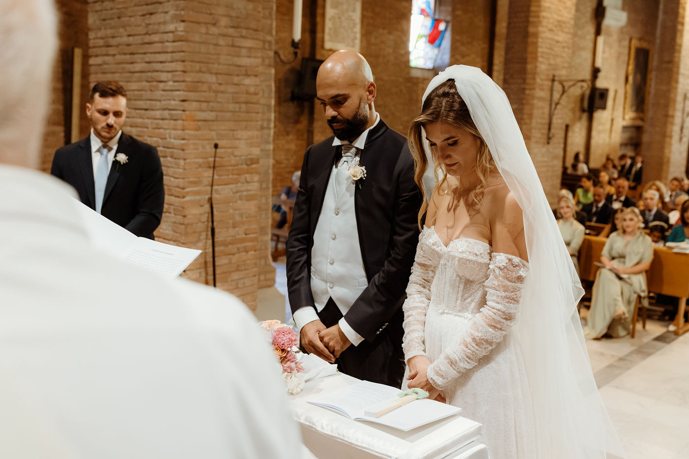

Elena & Alex
Un giorno in cinque momenti
Dal mattino alla notte, nell’ordine in cui è accaduto.
01
Il mattino
08:42 — 10:16


Prima di incontrarsi
Elena & Alex
20 · 09 · 2025


Due stanze, lo stesso mattino.
ancora separati —
ognuno pensa all’altro
02
La cerimonia
15:24 — 16:38



Poche sedie, molti sguardi.

-

Arrivano i primi ospiti.
-

Lo sposo.
-

La sposa.
-

Inizia la cerimonia.
-

Sposati!
“Qualunque cosa verrà,
la affronteremo insieme.”
03
Appena sposati
16:42 — 17:30
Fuori, nel
pomeriggio.Sequenza · 7 fotogrammi →


Persone che amiamo
-
Amici
-

Amici
-

Famiglia
-

Amici
-

Famiglia
-

Vecchi amici
The film / 03.5
A few minutes
from that day.
The wedding trailer.

04
Intorno alla tavola
19:30 — 22:40


Tavolo 04


biglietto scritto a mano

Una voce dalla giornata
Un discorso, registrato a tavola
00:00 / 01:24
05
Dopo il tramonto
23:48 — 02:10


Le scarpe sotto i tavoli.
Ancora una canzone.


La canzone che ricordiamo
Titolo della canzone
Artista
- Lato
- A · Traccia 01
- Suonata
- Primo ballo
- Durata
- —:—
Ultimi fotogrammi